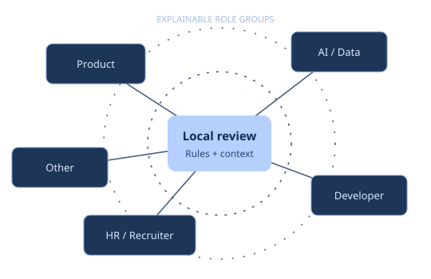

Independent software · private analysis
A clearer view.
A more thoughtful network.
Turn a flat connection export into an explainable review queue. Organize roles, understand each score, and keep every decision in human hands.
No LinkedIn login, API connection, or engagement tracking.

Your review workspace
Network Explorer
Start with the sample. Bring a file when ready.
Local CSV: UTF-8, up to 2 MiB, 2,000 records, 32 columns, 2,048 characters per field. Requires Position. Your file is read only inside this tab.
Fictional sample loaded. No file selected.
| Connection | Category | Recommendation | Priority | Why this score? |
|---|
No records match these filters.
Try a broader search or clear the category and priority selections.
Review CSV: name, position, company, category, recommendation, score, priority, and score basis. Formula-like cells are quoted. Email, profile URL, and unrelated input columns are omitted.
No black box
Every score has a paper trail.
Heuristics organize a review queue. They do not measure engagement, relationship strength, or personal worth.
Match a title. Preserve uncertainty.
Rules match whole keywords or phrases, ignoring case and repeated whitespace. The first category that matches wins. Unsupported or multilingual titles may remain Other.
- HR / Recruiterhr, recruiter, talent, people, human resources
- AI / Datamachine/deep learning, data scientist/analyst/engineer, ai/ml engineer, artificial intelligence; AI, ML, Data prefixes
- Productproduct; exact PM
- Developerdeveloper, engineer, cto, backend, frontend, fullstack, full stack, software, programmer
- OtherNo rule matched → review manually
1–5category relevance+0–3field completeness
One point for each non-empty field
Company · Position · URL. Presence is checked; validity is not inferred.
- Product
- 5 points
- Developer / AI & Data
- 4 points
- HR / Recruiter
- 3 points
- Other
- 1 point
High ≥ 7 · Medium ≥ 5 · Low < 5
Product Manager with company, title, and URL = 5 + 3 = 8. “Prioritize outreach” is a suggestion for review, never an automatic message.
A deliberately small privacy boundary
Your browser is the workspace.
The site loads its own static assets. CSV contents stay in memory in this tab. No server upload, remote API, analytics, storage, profile fetch, or account action is implemented. The Content Security Policy blocks outbound connections.
Clear means discard this workspace.
Clear Local Data replaces imported records with the sample. Closing or leaving the page discards the active workspace. This is not certified memory erasure and cannot remove original files, downloads, device backups, or browser extensions’ access.
Keep downloaded reports private. Browser download settings and spreadsheet import behavior remain your responsibility.
Read the Security ModelThe complete local workflow
Need Excel and all six charts?
Use the Python CLI.
Python 3.10+. Up to 20 MiB, 50,000 records, and 64 columns. The CLI writes category CSVs, two Excel workbooks, and six category, recommendation, and priority charts.
CLI CSVs preserve raw text; import as text in spreadsheet tools. Excel outputs quote formula-like values. The browser review CSV is a separate, smaller export.
Full Installation Guidepython -m pip install git+https://github.com/AlirezaBelal/linkedin-network-analyzer.gitlinkedin-network-analyzer --input Connections.csv --output-dir private-output --step allStart with a clearer review queue.
Independent software. Not affiliated with or endorsed by LinkedIn.